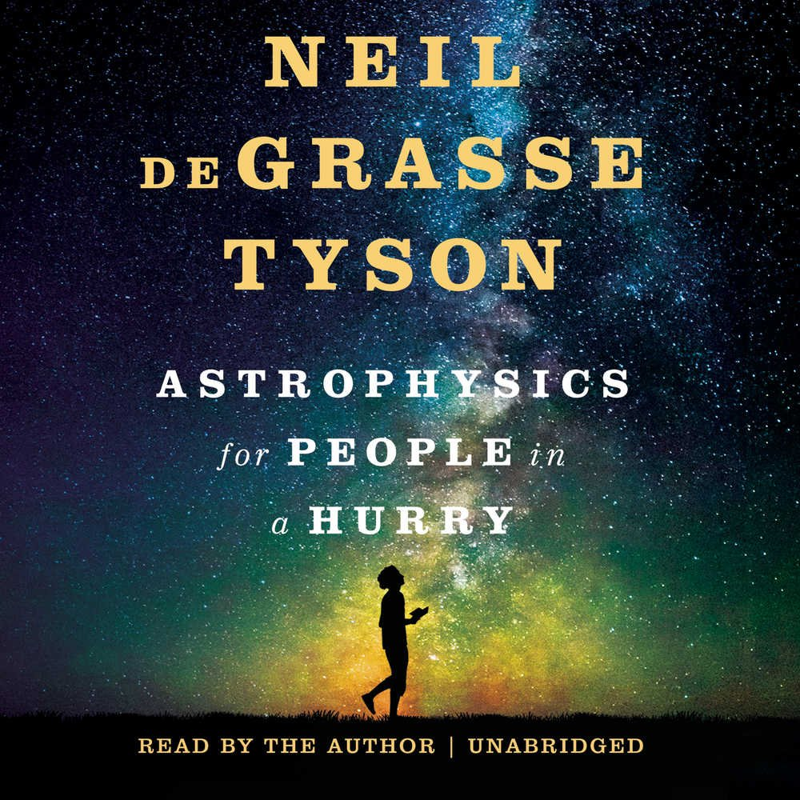
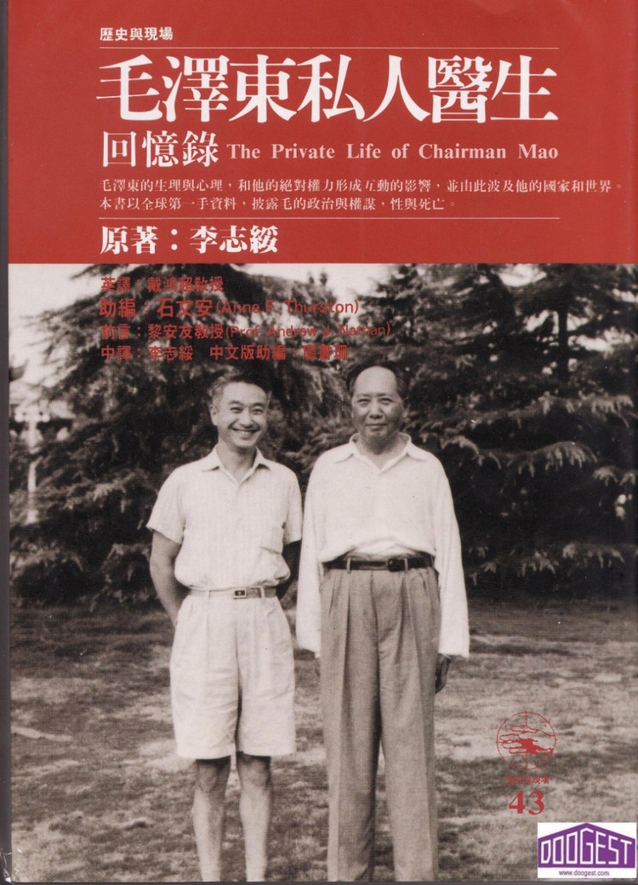

The most crucial motive of taking this Web Programming/Engineering class was me hoping to develop my coding skills, specially for industry purposes, and with functional skills to facilitate front-end/back-end programming learned, it will be a well valueable background to polish my resume shone. Prior to Tufts, my coding skill was limited to Python language in Jupyter Notebook or Spyder environment. I have had experiences of scientific computing in Python, regards to Physics/Astrophysics. While I am learning data structure in C++ this semester as well.
My top 3 favourite foods are: Korean/Japenese BBQ, Hot Pot/MaLaTang, home-made dumplings.
Flabbergasted when I first caught YangGuoFu(YGF) starting business in the states. It was a great substitution for hot pot, for replacing the time-consuming setting up of the big pot, and its overwhelming size, into a well customized bowl of soup base and ingredients as one wishes.
The best way to serve a bowl of YGF is with condiments of green onion slices, garlic slices, red chill oil, ground peanuts, and ice coffee! Don't forget some fruit/after dessert!
| Name | Image of the Cover | Author | Summary |
|---|---|---|---|
| Astrophysics for People in a Hurry |  | Neil Tyson | As the name tells, a pocket sized can response to most whimsys regards space for those who have no Astrophysics background. |
| The Chairman Mao's Private Doctor |  | Li Zhi-Sui | A first hand exposure to Mao's personal life behind the curtain, dicpting his yarnings and plots to secure his power and promiscuity. |
| The Restless Wave | John McCain & Mark Salter | A biography of Senator McCain entailing all stages of his advantous life, VietNam War, and callings of his belief. | |
| The Most Wanted Man in China | Perry Link | Translated version of the biography, of an exiled Astrophysist Fang Li-Zhi, revealing his ambitions and transformation towards communism. |